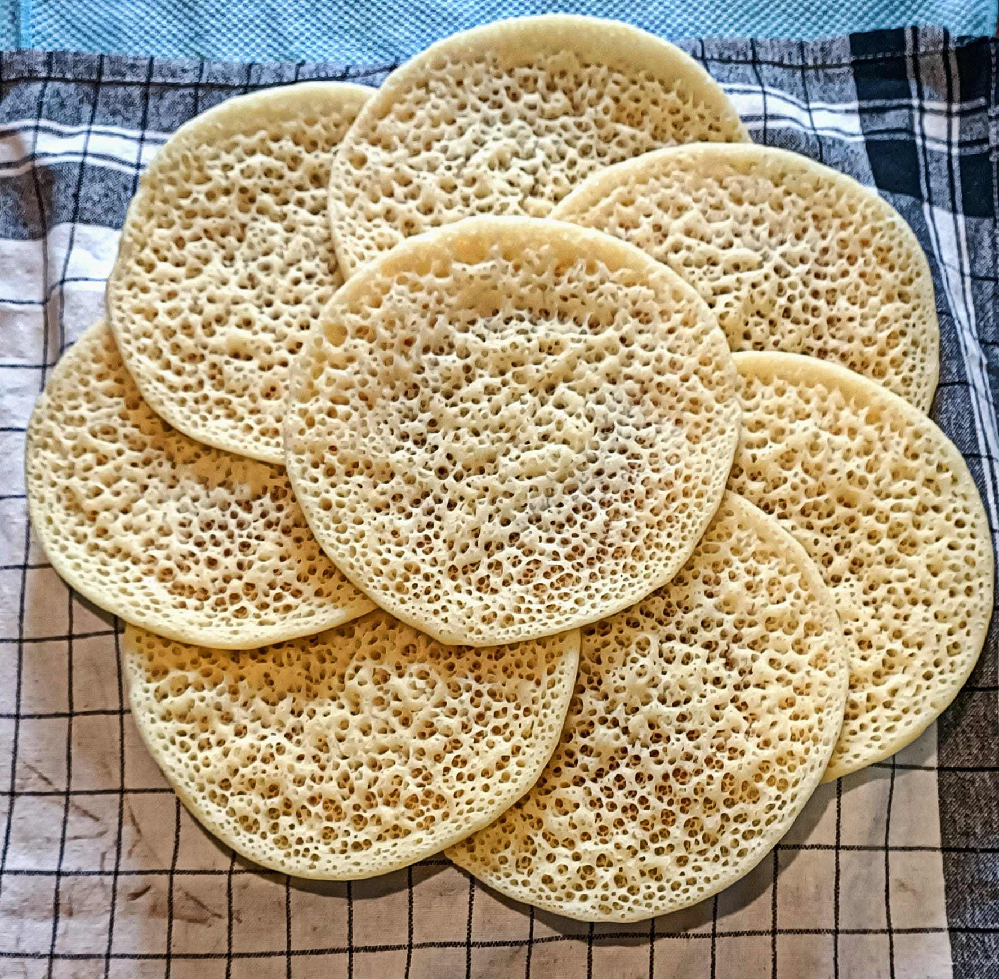

Mille Trous

Ingrédients
- 80 grammes de farine
- 225 grammes de semoule fine
- 500 ml d'eau tiède
- 1 sachet levure boulangère
- 1 sachet levure chimique
Préparation
- Mettre la farine, la semoule et la levure boulangère dans un bol, puis mélanger.
- Ajouter l'eau tiède au mélange.
- Puis mixer le tout dans un blender pendant 2 min.
- Ajouter le sachet de levure chimique, puis mixer 1 min.
- Laisser reposer 5-10 min.
- Dans une poêle qu'on met à la puissance max (9), on verse une louche du mélange.
- Après quelques secondes (dès que la pâte commence à cuire, on passe à la puissance 8, le temps que ça prenne), après, on met de côté.
- IMPORTANT : entre chaque crêpe, on passe la poêle à l'eau froide et on l'essuie.
- On répète la procédure jusqu'à finir le mélange.
Melwi
Ingrédients
- 80 grammes de farine
- 225 grammes de semoule fine
- 500 ml d'eau tiède
Préparation
- Mettre la farine, la semoule et la levure boulangère dans un bol, puis mélanger.